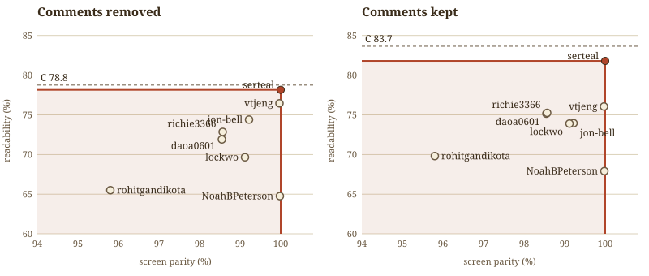
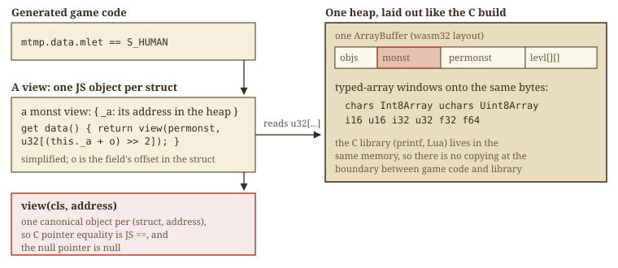

Two weeks to go, and we have our first 100% contestant, serteal, who has achieved full parity on all 100 sessions. But there's more. serteal has also jumped ahead on readability.
Remember that two weeks ago I measured how readable the Teleport ports are by asking a small model, Haiku, 500 questions about each codebase. serteal's port, the work of Alex Serrano, whom I wrote about in The First Mimic, came in last, at 18%, not much better than random guessing, since it was the unreadable output of an off-the-shelf transpiler. Let's take a look at the readability of current submissions.
A step up in readability
| Codebase | Comments removed | Comments kept | Screen parity |
|---|---|---|---|
| C (original NetHack 5.0) | 78.8 | 83.7 | - |
| serteal | 78.1 | 81.8 | 100.0 |
| vtjeng | 76.4 | 76.0 | 99.97 |
| richie3366 | 72.9 | 75.3 | 98.6 |
| daoa0601 | 71.9 | 75.1 | 98.6 |
| jon-bell | 74.4 | 74.0 | 99.2 |
| lockwo | 69.7 | 73.9 | 99.1 |
| rohitgandikota | 65.5 | 69.8 | 95.8 |
| NoahBPeterson | 64.8 | 67.9 | 99.98 |
Scores are the percentage of the 500 questions answered correctly, with the same questions, budget and reader as before. Differences of a few points are within the noise.
On readability, serteal remarkably jumped from 18% to 82%. How did he do it? Haiku now answers questions about serteal's port about as well as it answers them about the original NetHack C, and the port matches every screen we throw at it. It is the most readable contestant and the most faithful one, at the same time. We will take a look at how it does it, below.
vtjeng is edging forward too. The port is second in both columns, up about three points with the comments removed, and it is now within eight screens of perfect: every public screen matches, and it misses 8 of the 13,126 held-out ones.

The red line is the Pareto frontier. Last time it was a staircase of ports trading one quality for the other. Now serteal is the whole frontier.
Serteal's custom transpiler
Readable output from a transpiler is usually not something you get. A C compiler does not care what the output looks like, and most C-to-JavaScript tools show it: the output is correct and nobody can read it. serteal's new code is transpiled by a new tool he created called nh2js. It is about 7,500 lines, built on Clang's parser, and it emits one JavaScript file for each C file of NetHack, 249,000 lines of JavaScript against 250,000 lines of C.
Looking through the source, a few choices stand out.
The JavaScript is the C, with edits. Most transpilers translate the program and print the result. nh2js keeps the original C text and changes only the tokens that have to change. p->f becomes p.f, 'c' becomes ord('c'), and integer division gets a Math.trunc. Line N of the JavaScript is line N of the C. About half of the non-blank lines of the generated code are character-for-character identical to a line of the C source, and every comment survives, in place. Here is part of onscary in monmove.c, and the JavaScript:
return ((ep = sengr_at("Elbereth", x, y, TRUE)) != 0
&& (u_at(x, y)
|| (Displaced && mtmp->mux == x && mtmp->muy == y)
|| (ep->guardobjects && vobj_at(x, y)))return ((ep = sengr_at(_("Elbereth"), x, y, TRUE)) != null
&& (u_at(x, y)
|| (Displaced() && mtmp.mux == x && mtmp.muy == y)
|| (ep.guardobjects && vobj_at(x, y)))Every piece of syntax needs permission. The tool has a registry of more than a hundred rewrite rules, and each node of Clang's syntax tree has to be claimed by one of them. If any node in a function is not claimed, the function is not emitted by the clever path at all but falls back to a plain printer, and the fallbacks are reported. There is no way for an odd construct to slip through as a silent mistranslation. Each rule records where it fired, so the rarely used ones can be audited.
The runtime takes the mess. The reason most transpiled code looks the way it does is that C has pointers into raw memory and JavaScript does not. nh2js leaves the memory model to a runtime library, and the generated code reads like the C because the runtime is the one that pretends to be the machine.
All of the game's state lives in one ArrayBuffer, laid out the way the C compiler would lay it out. A struct is declared in a header module in one line per field, like the C header:
export const coord = struct("coord", {
x: coordxy,
y: coordxy,
});At load time the runtime computes each field's offset with the C layout rules (alignment, bit-field packing) and defines a getter and a setter for the field on the struct's class. A getter is JavaScript's own mechanism for running a function when a property is read. So a struct is an object with no data of its own except an address, and reading mtmp.mlet calls a small function that reads the byte at that address plus the field's offset. The runtime does not use a JavaScript Proxy, which would intercept every property access by name at run time and be slower. It does not need to, because the field names and offsets are known in advance. This is the accessor for a 32-bit integer field, and the one for a pointer field:
case "i32": return { get() { return i32[(this._a + o) >> 2]; },
set(v) { i32[(this._a + o) >> 2] = v; } };
case "ptr": return { get() { return rd(u32[(this._a + o) >> 2]); },
set(v) { u32[(this._a + o) >> 2] = addr(v); } };Here this._a is the address of the struct and o is the field's offset. A pointer to a struct is a view: an object whose only state is its address. For a pointer field the getter reads the address out of the heap and hands back the view for it, so mtmp.data gives you the permonst that the C mtmp->data points to. There is exactly one view object for each address, kept in a page table, so two pointers are equal in C exactly when the two views are == in JavaScript. A null pointer is null.
NetHack packs dozens of flags into bit-fields, like the monster's Bitfield(mpeaceful, 1) in monst.h. The runtime puts the shifting and masking in the accessor, so the game code is one line, the same line as in C:
mtmp.mtame = mtmp.mpeaceful = 0; /* artifact.js, as in artifact.c */// the accessor behind mtmp.mpeaceful, one byte of storage (w bits at shift sh)
get() { const x = uchars[this._a + u] >>> sh; return signed ? (x << (32 - w)) >> (32 - w) : x & mask; },
set(v) { const k = this._a + u; uchars[k] = (uchars[k] & ~(mask << sh)) | ((v & mask) << sh); },A transpiler without the runtime has to write that mask-and-shift at every place the flag is used.

The choice has a price, and a payoff.
The payoff is that the game code can be the C. Struct fields, pointer chains, pointer comparison, struct copies and bit-fields all look like C, because the runtime handles them. The heap also has the real C layout, so the C library the game still uses (the printf family and the Lua interpreter) works on the same memory with no copying, and strings are read straight from the byte arrays.
The price is that this is not the JavaScript a JavaScript programmer would write. Every field access is a function call, which an engine may inline, though I have not measured how much it costs: serteal has the slowest startup of the contestants (about 1.4 seconds, against 0.4 to 1.1 for the others), and about the middle of the pack per turn, and I do not know how much of either comes from this. The data is bytes in a buffer, so a debugger shows addresses instead of objects, and there is a view object for each struct address that has been touched. The typed arrays have to be rebuilt when the heap grows. And local variables whose address is taken, like a coordxy passed to a function by pointer, have to live in the heap as well, so they are declared as let x = stack_var(coordxy) and read as x[0]. There are about 1,900 of those.
Macros stay macros. NetHack is full of them. When a macro call can be shown to behave the same as a function call, nh2js keeps it as a call to a same-named JavaScript function, with the body copied from the #define. You still read is_lminion(mtmp) and ACURRSTR(), not their expansions. When it cannot prove that, it expands the macro in place.
Gotos become structure. A forward goto becomes a labeled block and a break; a backward one becomes a labeled loop and a continue. Only the tangled cases get a dispatcher, and the label lines are reused so the line numbers do not move.
Numbers are wrapped only when they must be. The tool computes value ranges for integer expressions and adds unsigned(...) or a truncation only where C's arithmetic could actually give a different answer. Two linters check the output: one flags any number on a JavaScript line that the C line does not write, and one flags C truth values returned as bare JavaScript booleans.
It is not entirely tidy. The tool still has to emit a stack frame for local arrays like buf, the goto dispatchers show up in a few big functions, and there are 1,900 such stack declarations in all. But the code a reader meets, function after function, is NetHack's own.
One more thing about Alex's port. Part of getting to 100% was finding a bug that the public sessions never show. Some held-out sessions contain keys above 0x7f, such as meta keys, and the terminal reads those as single bytes, while the contest's record-session.mjs was writing them as UTF-8, two bytes each. None of the 44 public sessions has such a key, so a contestant could only find this by working it out. Alex did, and fixed it on Nov 13. Noah had reported the same problem in issue #23, and we have now published the fix in the contest repository: the recorder sends each key as one byte, and the same commit has a patch to the NetHack capture buffer. Other contestants should take note of the patch.
Remember that this is just Phase 1 of the competition. At the end of November, I will release the material for Phase 2, which will ask contestants to update their code, a realistic development task, without changing their code too much. So our real goal will not just be readability, but maintainability. It will be interesting to see how the different approaches fare!
Congratulations, Alex.
Addendum, November 18: a traditional transpiler at 100%
A recent entrant, Teoman21, has entered a traditional transpiler that reaches 100% parity with C: every screen of all 100 sessions in the judge's scoring run of November 18. It compiles NetHack's own C to WebAssembly with Emscripten and turns that into JavaScript with wasm2js, the same family of tool as serteal's first port.
I measured its readability the same way as above, with the same questions, the same Haiku reader and the same half-penny budget, on the code in its fork as of November 16. It scores 9.4% with the comments kept and 9.2% with them removed. There are no comments to speak of: they are 0.1% of the bytes.
That is half the score of the 18% that serteal's first transpiler scored in October, and a long way below the 78% to 82% readability of his new nh2js port. In other words, Teoman21's code is not trying to be readable. About 170 files in the original C code have been compiled into 10 files of JavaScript, with dense source that jams up to 2.7 MB on each line of code. Faced with this code, Haiku complains that the game logic is "compiled C", that searching for names like nazgul or Yendor finds nothing, and that it can only answer from what it remembers about NetHack. It demonstrates that perfect correctness can be achieved without any readability.
Another entrant, jrqc, has a transpiler that seems to be going for readability. It writes one JavaScript module per C file and keeps the original function and variable names. Measured the same way, it scores 74.2% with the comments kept and 69.1% with them removed, close to the hand-written ports.